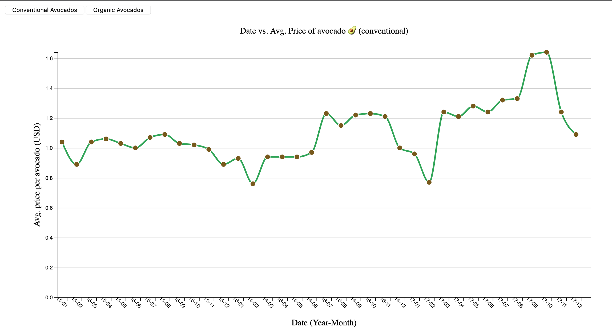

Principios de diseño en visualización
IIC2026
Principios de IHC
Principios de diseño en visualización
IIC2026
Interfaces Humano Computador (IHC)
Principios relacionados con la interacción y mostrado de información.
Los ojos le ganan a la memory (Eye beats memory)
Para un usuario, es mucho más fácil ver información que recordarla.
Los ojos le ganan a la memory (Eye beats memory)

(Imagen generada por Francisca Ibarra, del Equipo Docente IIC2026)
Los ojos le ganan a la memory (Eye beats memory)
(Imagen generada por Francisca Ibarra, del Equipo Docente IIC2026)
Los ojos le ganan a la memory (Eye beats memory)

(Imagen generada por Francisca Ibarra, del Equipo Docente IIC2026)
Los ojos le ganan a la memory (Eye beats memory)
Panorámica primero, detalles en demanda
"Overview first, zoom and filter, details on demand" - Ben Shneiderman
Panorámica primero, detalles en demanda
(Imagen obtenida de Where slang comes from - Pudding.cool)
Panorámica primero, detalles en demanda
(Imagen obtenida de Where slang comes from - Pudding.cool)
Panorámica primero, detalles en demanda

(Imagen obtenida de Human Terrain - Pudding.cool)
Panorámica primero, detalles en demanda
(Imagen obtenida de Human Terrain - Pudding.cool)
La responsividad es requerida (Responsiveness is required)
Responsividad es la capacidad de una herramienta de dar respuestas ante acciones del usuario.
Latencia: tiempo que demora en realizarse algún proceso de respuesta en una herramienta.
Retroalimentación visual (Visual feedback)
Toda respuesta visual que le entrega una herramienta a un usuario y que le provee información sobre lo que ocurre.
- Generar resultados de acción enviada por usuario.
- Notificación de recepción de acción.
- Indicador de progreso.
- Énfasis visual sobre elementos relacionados a la acción.
- ...
Costo en latencia y atención
- Procesamiento perceptual (actualización de pantalla): 0,1 segundos.
- Respuesta (casi) inmediata (reatrolimentación visual): 1 segundo.
- Tareas breves (procesamiento complejo): 10 segundos.